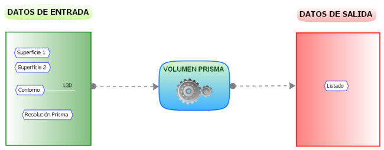
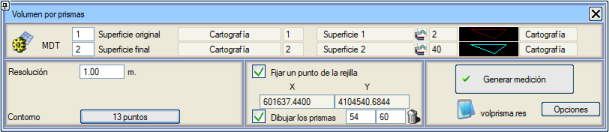
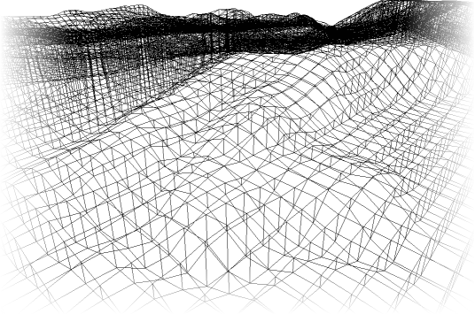
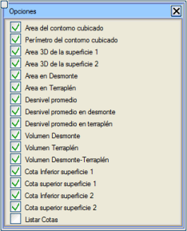

| |
|
PRİZMATİK HACİM HESABI
|
|
İki yüzey ve kapalı bir kontur ile sınırlanan hacmi hesaplar. Kontur çizgisinin yüzeylerden herhangi birine ait olması gerekmez ve dikey bir prizmanın kılavuz çizgisi olarak kullanılır. Bu algoritma, hacmi yarma ve dolgu hacimlerini ayırarak kare tabanlı prizmaların hacimlerinin toplamı olarak hesaplar. 
Aşağıdaki şekillerde, prizmatik hacim hesaplama kavramı şematize edilmiştir:
ISTRAM®/ISPOL® tarafından istenen giriş parametreleri her durumda şunlardır:

Kullanıcı, koordinatlarını bildiği bir Grid Noktasını Sabitleme imkanına sahiptir. Bu nokta verildiğinde, program gridin geri kalanını seçilen kontura kadar hesaplar. Bu seçenek etkinleştirilmezse, program otomatik olarak varsayılan bir grid hesaplar. Belirtilen kontur içinde her iki yüzey arasındaki karşılaştırma, yarma (alt olarak tanımlanan yüzeyin üstte olması) veya dolgu (alt olarak tanımlanan yüzeyin altta olması) ölçümünü verir. Hacim, kare tabanlı prizmaların hacimlerinin toplamı olarak hesaplanır. Prizmaları Çiz seçeneği, hesaplama için kullanılan prizmaları, yarma ve dolgu için belirtilen çizgi tipleriyle (varsayılan olarak sırasıyla L54 ve L60) harita üzerine aktarır. [S] butonu bu prizmaları siler. 
[Seçenekler] butonu, kullanıcının [Metraj Oluştur] butonuna bastıktan sonra listelenecek ölçümleri seçebileceği bir iletişim kutusu açar. Eğer Kotları Listele kutucuğu etkinleştirilirse, listede her prizmanın merkez koordinatı ve her prizmadaki alt ve üst yüzeylerin ortalama kotları da dahil edilir. Bu kutucuk listelendiğinde, prizmanın yarma hacmine ve dolgu hacmine katılım yüzdesi de listelenir. Toplam, kontur tarafından kesilen prizmalarda 100'den az olacaktır.
Sonuç, yarma ve dolgu hacimleri şeklinde durum çubuğunda yansıtılır, ayrıca volprisma.res listesinde yarma ve dolgunun ortalaması ve diğer ilgili bilgilerle birlikte görünür. ===================================================== * * * PRİZMATİK HACİM HESABI * * * ===================================================== Birinci olarak tanımlanan yüzey (1) Yüzey 1 İkinci olarak tanımlanan yüzey (2) Yüzey 2 Kullanılan Çözünürlük 1.000 Hacmi hesaplanan kontur alanı 112893.705 Hacmi hesaplanan kontur çevresi 1326.858 Yüzeyin 3D alanı (1) 127117.545 Yüzeyin 3D alanı (2) 121068.310 Yarma Alanı 54010.780 Dolgu Alanı 57600.255 Ortalama kot farkı 5.239 Yarmadaki ortalama kot farkı 6.603 Dolgudaki ortalama kot farkı 4.077 Sonuçlanan toplam hacimler Yarma Hacmi 356651.793 Dolgu Hacmi 234815.056 Yarma-Dolgu Hacmi 121836.737 Yüzeyin Alt Kotu (1) 24.000 Yüzeyin Üst Kotu (1) 83.000 Yüzeyin Alt Kotu (2) 26.614 Yüzeyin Üst Kotu (2) 78.766 Xc Yc Z1 Z2 ------------ ------------ ---------- ---------- 601433.708 4104602.497 76.416 76.341 601433.708 4104603.497 76.213 76.131 601433.708 4104604.497 75.849 75.779 601433.708 4104605.497 75.526 75.538 601433.708 4104606.497 75.210 75.346 601433.708 4104607.497 74.847 75.160 601433.708 4104608.497 74.350 74.848 ... ... ... ... |